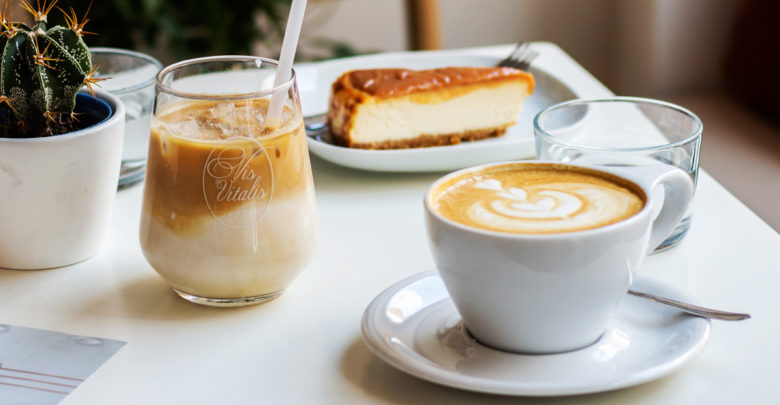

Caffé Latte Recipes

Caffé Latte, coffee with milk never goes wrong.
Europeans have been mixing coffee and milk since at least the 17th Century. The term “caffe e latte” was first
used by William Dean Howells in his 1867 essay “Italian Journeys”.
Caffé Latte is basicly mixing a coffee(Caffé) with milk(Latte). You can served Caffé Latte as a cold or hot
beverage, but for hot version you need to get a little bit more technical and having a specific tools to do so.
Ingridients for the ice version.
For the ice version of Caffé Latte, you need:
- Espresso
- Milk, you can use whole milk or alternative milk as your preference
- Ice cube
- Syrup of your choice
- Topping as optional
How to make your Ice Caffé Latte:
First, we gonna make the ice version, which in my opinion, this the simplest version and refreshing for the
sunny day, all you need to do:
- This is optional, but if you want to make flavored verions of your caffé latte, you can pour it now
before the milk. But if you preferred the classic version, you can skip this
- Pour milk into your glass, I suggest to pour between 100-130gr of milk for kinda strong version, and
above 130gr for less strong version
- Put some Ice cube in your glass
- Pour your espresso on top of it
- And last but not least, you can put some topping on top of it, but again, this is optional and you can
just skip it
Tools for the Hot Version.
To make hot version of caffé latte is a little bit technical, and you need some specific tools to heating the
milk and creat texture on the milk, such as:
- Milk jug with appropriet size
- To heating the milk, the best practice is to use steam on the espresso machine, because you can also
creating the texture while heating the milk. But if you don't have espresso machine, you can also use
microwave to heating the milk.
- You need milk frother if you heating your milk using other than steam on espresso machine, to create the
texture on your milk
How to make hot Caffé latte
I'm going to tell how to steam your milk to create hot caffé latte using espresso machine first, and I'll
cover other methode later on
let's start by doing:
- Pour your milk in your milk jug, I suggest to pour around 150-180gr of milk, or you can just pour your
milk until below your milk jug indent for the spout
- Turn on the steam to release some water and pressure, and then turn it of
- Take the steam wand and position it towards you, around 90 degree
- Align your milk jug by put the steam wand inside your milk jug, rest the steam wand on the milk jug
spout to avoid unnecessary movement put the steam wand tip right in the middle of milk jug, submerged
the tip into the milk just enough, not too deep
- And then tilt the milk jug left or right(as your preference), this is to create what we call vortex
motion while you "stretch" and "heating/polish" the milk
- Once all set up, turn on the steam and you should hear like paper ripping sound, that's the indication
if you stretching the milk, meaning you inject some air into your milk to create what we call microfoam,
that microfoam is what create a texture on your milk and if you can, you can actually create some latte
art when your pour your milk in your espresso. If what you hear like screaming sound, you submerged too
much, lower the
milk jug just enough until you hear that ripping paper sounds. If the ripping paper sounds too much or
too wild, upper your jug just enough until it sounds controlled.
- Stretch the milk untill just enough microfoam, not too thick and not too thin, its oke if its not
perfect in the first time, once you master it, you'll know how much time it take to stretch your milk
perfectly.
- Once you done stretch, upper the milk jug slightly to polish the microfoam and heating up the milk
- Heating your milk until around 60-65ºc, using a thermometer for the first time might help, but you can
also using your hand, just continuously tap the milk jug until your feel its too hot to touch, that's
around 60-65ºc and turn off your steam
- When you done steam your milk, take milk jug out, grab the rag and clean the milk from the steam wand,
position your steam wand to the drip tray, turn it on and off quickly to release milk that might be
sucked into the steam wand
- And then just pour your steamed milk into your espresso, then enjoy it
Tools for Hot Caffé Latte without steam
If you make your espresso with manual espresso maker, you probably didn't have any steam like the one on
espresso machine.
So in this section, I'll tell you how to heating your milk and creat similar texture without steam on
espresso machine
But you probably need:
- Milk jug with appropriet size
- Microwave or any thing that can heating up your milk up to 60-65ºc, stove can also work
- Milk frother, or french press to create texture on your milk
How to make Hot Caffé Latte without steam
- Pour your milk in your milk jug, I suggest to pour around 150-180gr of milk, or you can just pour your
milk until below your milk jug indent for the spout
- Put your milk into microwave, set the temprature to 60-65ºc, set the timer and just press start
- After you done, take it off
- Take your frother, put your frother into the milk, and start frothing
- Make sure you not stretch the milk too much
- After you finish frothing the milk, swirl the milk jug a couple times to mix the actual milk with
microfoam
- After you seeing the milk look shiny and the texture look like melted ice cream, you're good to go
- Pour your milk into your espresso
- And enjoy it